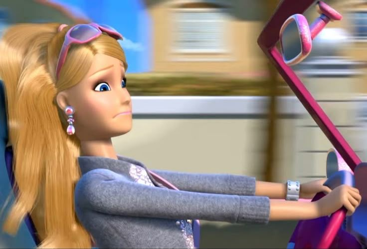

Universo dos filmes da Barbie
Um universo cheio de magia!
Além das aventuras
Descubra alguns fatos interessantes sobre os filmes e o universo da Barbie.

Universo dos filmes da Barbie
Barbie já apareceu em vários filmes com histórias de magia, amizade e aventura.
Nos filmes, Barbie pode interpretar princesas, fadas, sereias e muitos outros personagens.
A amizade é um dos principais temas das histórias da Barbie.